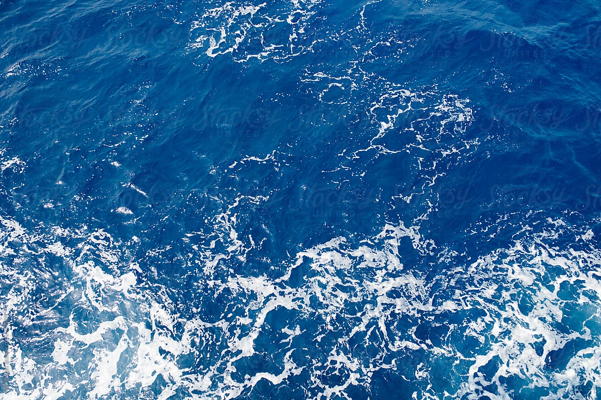

Aframe Project
//Original Image Source (Project 2): https://www.allaboutbirds.org/guide/Peregrine_Falcon/id
//Ground image source: https://www.stocksy.com/749205/ocean-from-above
//Sound source: http://soundbible.com/1935-Ocean-Waves.html
//assets
--------------------
//bird asset

//cliff asset
//bush asset
//tree asset
//waves audio
//red fish asset
//green fish asset
//black fish asset
//cloud asset
//water image asset
-----------
//sky
//sun
// back clouds
-----------
-----------
// middle clouds
-----------
-----------
//light
//falcon
//falcon text
//chasing red fish
//old animation
//animation="property: position; from: -3 -5 0; to: -3 -5 6; loop:true; dir:alternate;" animation__2="property: rotation; to: 0 180 0; loop:true; dir: alternate; delay: 3000;"
//fleeing school of fish
-----------------
--------------------
//twisting green fish
//jumping green fish
//jumping black fish
//main cliff
//surrounding cliffs
-----------------
-----------------
//bushes and trees
-----------------
//main island
//back island
//front island
//right island
s
---------------------
//water